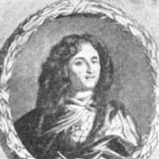
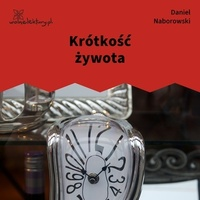
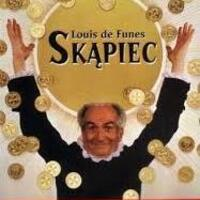

Barok (XVII wiek)
Barok to epoka pełna kontrastów, emocji i bogatego języka. W literaturze dominowały motywy religijne i refleksja nad życiem.
Autor 1: Daniel Naborowski
Daniel Naborowski – poeta barokowy, autor utworów o tematyce filozoficznej i religijnej.

Dzieło: „Krótkość żywota”
Krótkość żywota – wiersz o przemijaniu życia i jego ulotności; podkreśla, że wszystko szybko mija..

Autor 2: Molier
Molier – francuski dramaturg i aktor, twórca komedii obyczajowych.

Dzieło: „Skąpiec”
Skąpiec – komedia o Harpagonie, skąpym ojcu, dla którego pieniądze są ważniejsze niż rodzina i uczucia..
